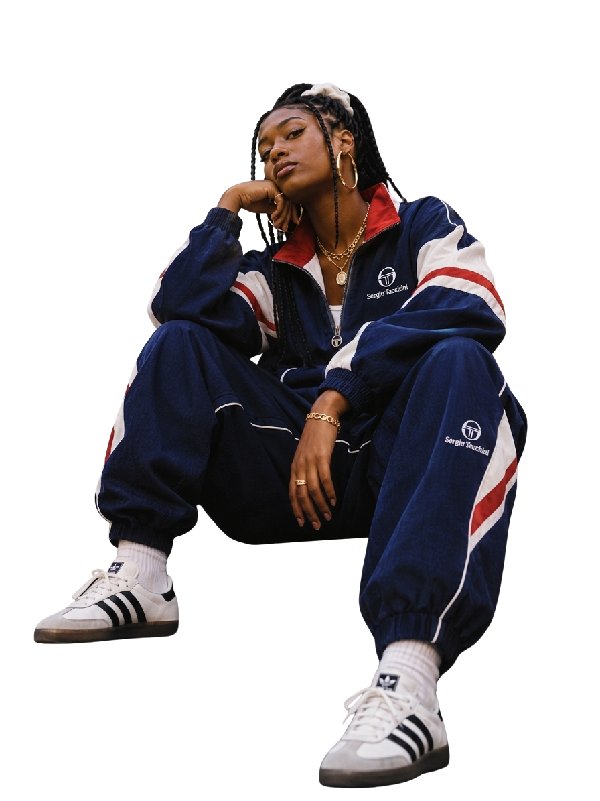

GROOVE NOMAD
ISSUE N.00
£0.00
£0.00
WOMEN
IN RAP
IN RAP
10 VOICES. 10 STORIES.
READ
Issue N.00 · Our starting point
Music moves.
We follow.
Groove Nomad is an independent digital magazine about music, movement and style.
Each issue follows one theme through the people, stories and videos that shaped it. No rankings. Just voices worth hearing.
Meet the ten voices ↓
One theme.
A different visual language every time.
Ten voices.
One timeline.
Not a ranking. Not the whole story.